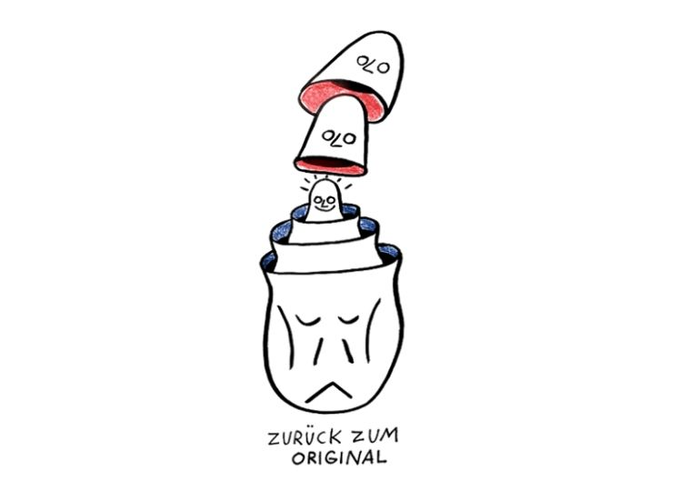

Tipp 4: Zurück zum Original!

Viele Dinge, die man im Internet findet, wurden aus dem Zusammenhang gerissen. Vielleicht gibt es ein Video von einem Kampf zwischen zwei Leuten. Aber was passierte davor? Wer hat damit angefangen? Was wurde aus dem Video herausgeschnitten und was blieb drin?
Vielleicht gibt es ein Bild, das real erscheint, aber die Bildunterschrift ist bestenfalls zweifelhaft. Vielleicht wird eine neue medizinische Behandlung auf der Grundlage einer Forschungsarbeit beansprucht - aber Du bist nicht sicher, ob die Studie diese Empfehlung tatsächlich unterstützt.
In diesen Fällen lautet unsere Empfehlung: Verfolge das Zitat oder die Medien bis zum Original zurück, so dass Du sie in ihrem ursprünglichen Kontext siehst. Das zeigt Dir, ob die weitergegebe Darstellung stimmig und richtig ist.
Beispiel: ‘Grundschulverbot’ von Linnemann
Sehr gut veranschaulichen lässt sich diese Herausforderung anhand der Debatte um das von Carsten Linnemann vermeintlich geforderten ‘Grundschulverbot’ für Kinder, die kein Deutsch können.
Auf Twitter stößt Du dazu auf dieses Bild, ohne die Debatte zu kennen:
Du könntest nun - je nach Deiner politischen Auffassung - empört oder zustimmend retweeten, einen Screenshot anfertigen oder recherchieren, welcher Account sich hinter @TKuban96 verbirgt. Im Interesse einer Faktenprüfung und der hier vorgestellten Tipps, wäre ein anderer Weg aber empfehlenswerter: Nicht darüber nachdenken, was jemand dazu sagt, was jemand anderes an anderer Stelle gesagt hat. Sondern: Die Information zur Quelle zurückverfolgen!
Das funktioniert mit den bereits geschilderten Möglichkeiten der 'Netzbefragung'. Die RP online ist als Quelle im Tweet in diesem Fall sogar angegeben. Eine einfache Suche mit den Schlagworten 'Linnemann, Grundschule, RP Online' führt uns schnell zum Original-Interview. (Und wenn das im Sommer 2019 von Anfang an mehr Menschen so gemacht hätten, dann wäre uns allen die von Sascha Lobo sehr treffend charakterisierte 'Anatomie eines deutschen Shitstorms' erspart geblieben.)
Und wie ist das bei Bildern?
Um Bilder zum Ursprung zurückzuverfolgen gibt es ebenfalls einen einfachen Weg: die Bilder-Rückwärtssuche